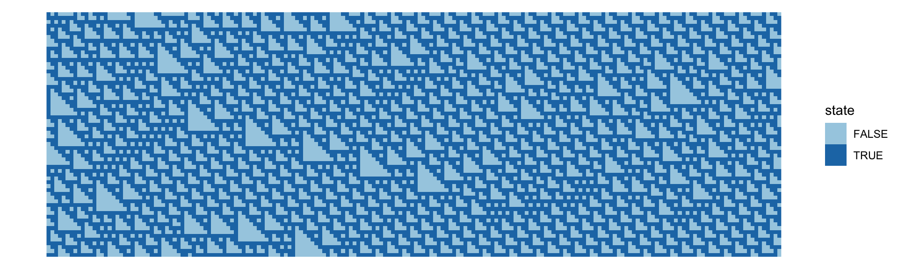
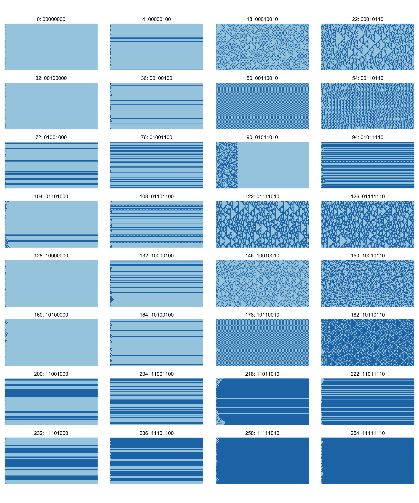

The 1D elementary CA model code is in the block below. It returns a matrix of cell states, with each system state a row in the matrix.
The key function is one_d_ca(rule, n, density, t), which returns a t\(\times\)n matrix, with initial density of 1’s given by the density parameter, and the update rule being Wolfram code rule.
Code
library(dplyr)# initialise random state, specified size and densityinit_state <-function(n =50, density =0.5) {as.numeric(runif(n) < density)}# pre- and post-fix the last and first elements of the statewrap_state <-function(x) {c(tail(x, 1), x, x[1])}# binary vector to decimal integer (most significant bits first)as_decimal <-function(b) {sum((2^ ((length(b) -1):0)) * b)}# convert decimal integer to vector of bits (most significant first)as_binary <-function(n, n_bits =8) { result <-c()for (i in1:n_bits) { result <-c(n %%2, result) n <- n %/%2 } result}rule_description <-function(rule_num) {paste(rule_num, paste(as_binary(rule_num), collapse =""), sep =": ")}# takes a matrix of CA states (each row a timestep) and appends# a new row for the next system stategeneration <-function(states, rule) { state <-tail(states, 1) %>%c() w_state <-wrap_state(state) result <-c()for (i in1:length(state)) { nbhd <- w_state[seq(i, i +2)] result <-c(result, rule[as_decimal(nbhd) +1]) }matrix(c(states %>%t() %>%c(), result), nc =ncol(states), byrow =TRUE)}# generate a matrix of cell states where each row is the system stateone_d_ca <-function(rule =30, n =64, density =0.5, t =192) { s <-init_state(n, density) ss <-matrix(s, nr =1)for (i in2:t) { ss <-generation(ss, rev(as_binary(rule))) } ss}
Making plots
Figure 8.2
The matrix format is convenient for computation, and fine for plotting a single model result but that has to be converted to a dataframe to be plotted using ggplot2. So here is the pure R version of Figure 8.2, but with time running from top to bottom, more cells, and more time.
Code
library(ggplot2)library(reshape2)one_d_ca(rule =110, n =192, density =0.5, t =384) %>% reshape2::melt(c("t", "x"), value.name ="state") %>%mutate(state =as.logical(state)) %>%ggplot() +geom_raster(aes(x = x, y =-t, fill = state)) +scale_fill_brewer(palette ="Paired") +coord_equal() +theme_void()

Figure 8.1
And here are the results for all Wolfram’s elementary 1D CA.
Code
# convenience function to return a dataframe instead of a matrixget_df <-function(rule, n =64, density =0.5, t =192) {one_d_ca(rule = rule, n = n, density = density, t = t) %>% reshape2::melt(c("t", "x"), value.name ="state") %>%mutate(state =as.logical(state),rule = rule)}# The 32 rules that match Wolfram's selection criteriarules <-c( 0, 4, 18, 22, 32, 36, 50, 54,72, 76, 90, 94, 104, 108, 122, 126,128, 132, 146, 150, 160, 164, 178, 182,200, 204, 218, 222, 232, 236, 250, 254)df <-get_df(rules[1], t =128)for (rule in rules[2:32]) { df <-bind_rows(df, get_df(rule, t =128))}# give the rules a better labeldf$rule <-factor(df$rule, levels = rules,labels =lapply(rules, rule_description))ggplot(df) +geom_raster(aes(x = t, y = x, fill = state)) +scale_fill_brewer(palette ="Paired") +coord_equal() +guides(fill ="none") +facet_wrap( ~ rule, ncol =4) +theme_void()

Code
# License (MIT)## Copyright (c) 2023 David O'Sullivan## Permission is hereby granted, free of charge, to any person# obtaining a copy of this software and associated documentation# files (the "Software"), to deal in the Software without restriction,# including without limitation the rights to use, copy, modify, merge,# publish, distribute, sublicense, and/or sell copies of the Software,# and to permit persons to whom the Software is furnished to do so,# subject to the following conditions:## The above copyright notice and this permission notice shall be included# in all copies or substantial portions of the Software.## THE SOFTWARE IS PROVIDED "AS IS", WITHOUT WARRANTY OF ANY KIND, EXPRESS# OR IMPLIED, INCLUDING BUT NOT LIMITED TO THE WARRANTIES OF MERCHANTABILITY,# FITNESS FOR A PARTICULAR PURPOSE AND NONINFRINGEMENT. IN NO EVENT SHALL# THE AUTHORS OR COPYRIGHT HOLDERS BE LIABLE FOR ANY CLAIM, DAMAGES OR OTHER# LIABILITY, WHETHER IN AN ACTION OF CONTRACT, TORT OR OTHERWISE, ARISING# FROM, OUT OF OR IN CONNECTION WITH THE SOFTWARE OR THE USE OR OTHER# DEALINGS IN THE SOFTWARE.